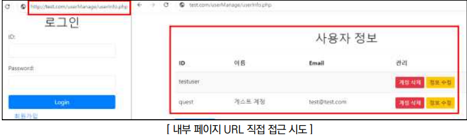
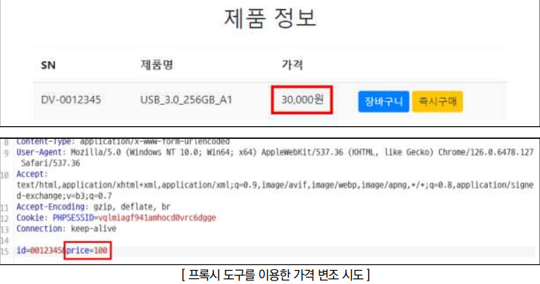

점검 목적
- 서비스 제공에 필요한 사용자 입력 및 실행단계의 흐름에 대한 검증의 적절성 여부 점검
- 서버 사이드에서 적절한 검증을 통해 비정상적인 입력 및 프로세스 흐름으로 허용되지 않은 웹 애플리케이션 내 발생할 수 있는 논리적 오류를 차단하기 위함
판단 기준
양호 : 프로세스에 대한 검증이 존재하며, 악의적인 행위(URL 직접 접근, Javascript 로직 변조 등)를 통하여 논리 오류가 발생하지 않는 경우
취약 : 프로세스에 대한 검증이 미흡하여, 논리 오류를 통한 의도된 기능이 왜곡되거나 보안 취약점이 노출되는 경우
조치 방법
- 프로세스 검증이 필요한 경우 각 프로세스에 대한 체크 로직 구현
점검 방법
Step 1) 웹 사이트 내 기능들의 권한 종류 및 프로세스의 흐름을 파악하고 각 프로세스의 통제를 우회 및 악용 가능성 여부 점검(권한 상승, 민감 정보 획득, 가격 변조 등)
* 비 로그인 상태로 URL 직접 접근을 통해 내부 사용자 관리 페이지로 접근할 수 있는지 확인하는 예시

가격 정보에 대한 검증이 미흡하여, 파라미터 변조를 통해 변조된 가격으로 상품 구매 가능 여부 확인

조치 방법
1. 모든 비즈니스 로직에서 예상된 프로세스 흐름을 검토하여, 중간 단계를 생략하거나 우회할 수 없도록 플로우 제어 로직을 추가하여, 사용자가 단계별로 진행했는지 검증하도록 구현
2. 인증이 필요한 주요 정보 페이지에 접근 요청자의 권한을 검증하는 로직을 구현하고 임의로 수정할 수 없도록 서버 사이드에서 구현된 프로세스를 사용(세션 기반 접근 통제, 토큰 기반 접근 통제, Referer 검증 등)